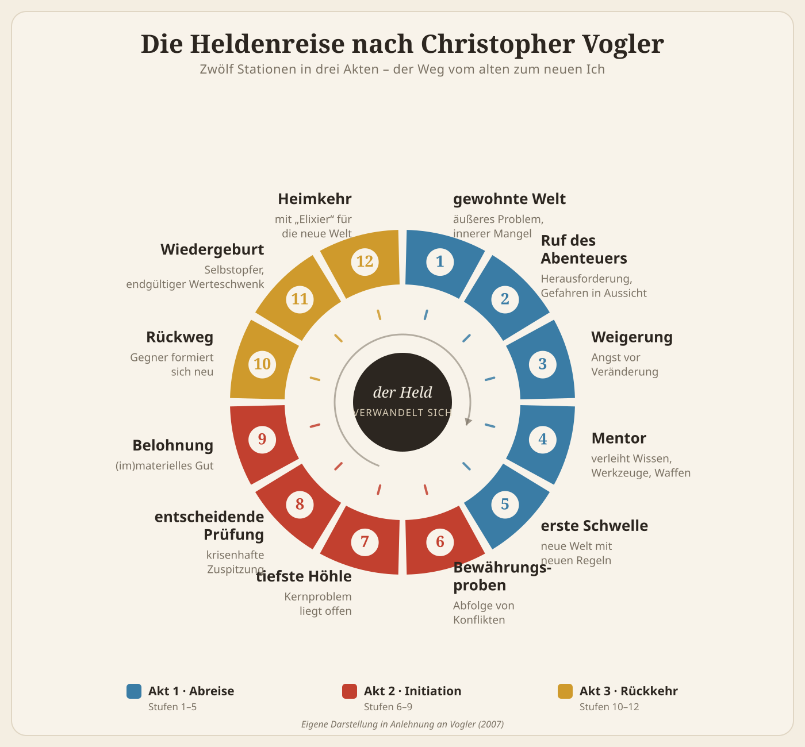
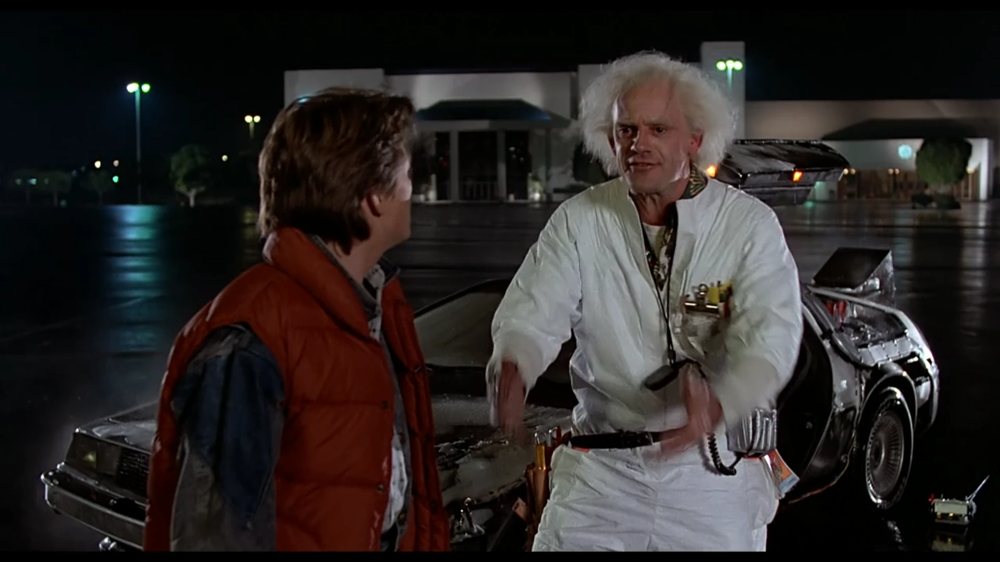
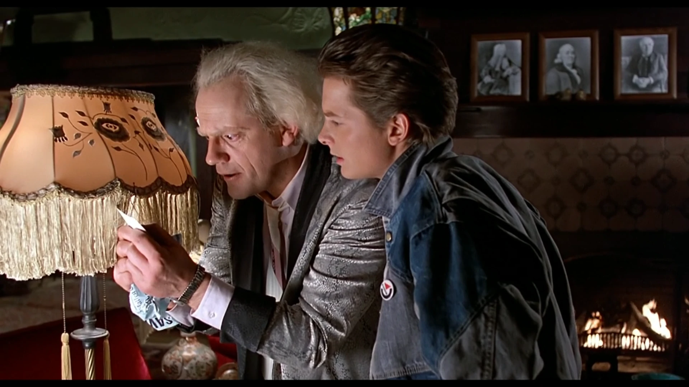
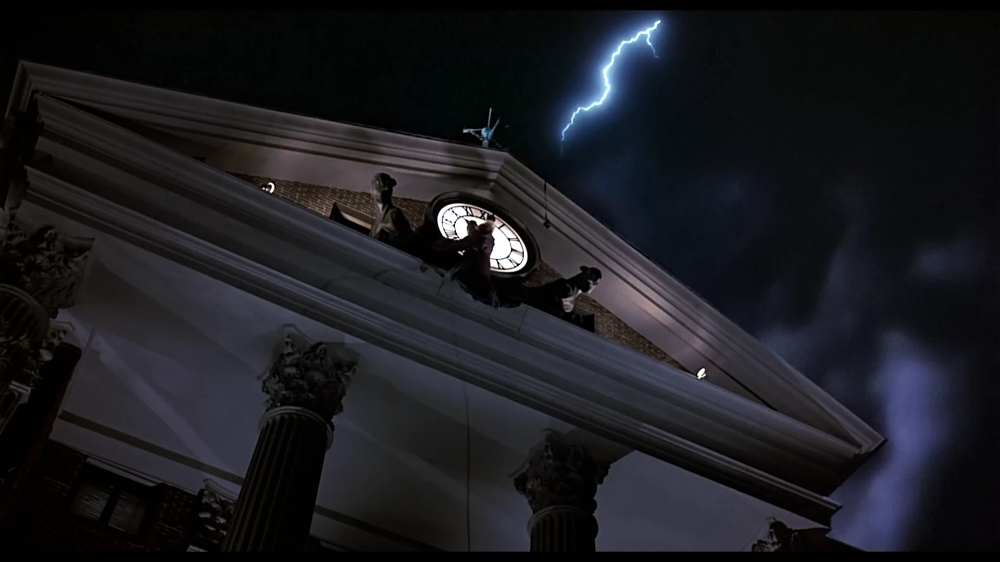
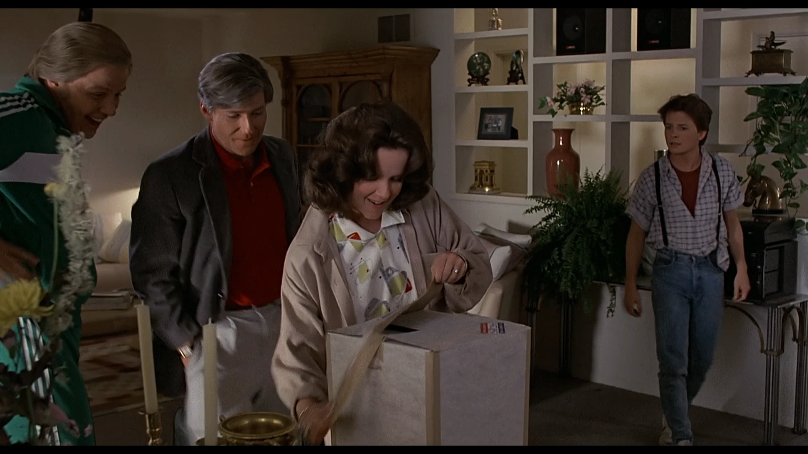

Diesmal mit dem Skalpell
Dies ist ein etwas anderer Eintrag als die beiden davor. Keine reine Review, sondern eine Analyse. Ich wollte schon länger einmal nicht nur erzählen, ob mich ein Film gepackt hat, sondern aufmachen, wie er das eigentlich anstellt. Und welches Objekt wäre dafür besser geeignet als einer, den ich seit meiner Kindheit liebe und der letztes Jahr seinen 40. Geburtstag gefeiert hat. Mit Kino-Wiederaufführung, frischem 4K-Steelbook und Michael J. Fox' Erinnerungsbuch Future Boy obendrauf. Und ich saß natürlich im Triple-Feature im Kino.
Den Film kennt ihr vermutlich alle. Genau deshalb ist er so spannend zum Auseinandernehmen: Wir wissen alle, dass er funktioniert, aber warum so verdammt zuverlässig? Meine These: Ein großer Teil der Antwort steckt in einer uralten Erzählstruktur, die mitläuft wie der Flux-Kompensator im DeLorean. Ich schaue mir Zurück in die Zukunft deshalb durch die Brille von Christopher Voglers Heldenreise an, dem Zwölf-Stufen-Modell aus der Drehbuchpraxis. Der Film ist beinahe ein Musterbeispiel dafür und das ist kein Zufall. Aber ich will auch ehrlich sein und zeigen, wo das Modell meiner Meinung nach etwas knirscht.
Kleine Warnung: Anders als sonst spoilere ich hier alles. Eine Analyse geht nicht ohne. Wer den Film noch nicht gesehen hat: schaut ihn zuerst, kommt dann wieder – ich warte.
Worum geht's?
Marty McFly, ein gewöhnlicher Teenager im Hill Valley des Jahres 1985, wird durch ein missglücktes Experiment seines Freundes Doc Brown in einem umgebauten DeLorean ins Jahr 1955 katapultiert. Dort stört er versehentlich das erste Kennenlernen seiner künftigen Eltern; mit der unangenehmen Nebenwirkung, dass seine eigene Existenz auszulöschen droht. Marty muss seine Eltern also wieder zusammenbringen und gleichzeitig mit der 1955er-Version von Doc einen Weg zurück in die Zukunft finden. Klingt nach einem Haufen Zeitreise-Physik. Ist im Kern aber eine Heldenreise im Reinformat.
Hintergrund: Ein Drehbuch, das niemand wollte
Bevor wir ins Modell einsteigen, ein bisschen Entstehungsgeschichte. Die Grundidee kam Bob Gale 1980, als er im Haus seiner Eltern das alte Highschool-Jahrbuch seines Vaters durchblätterte und sich fragte: Wäre ich eigentlich mit meinem Dad befreundet gewesen, wenn wir zusammen zur Schule gegangen wären? Robert Zemeckis sprang sofort an und steuerte den pikanten Twist bei: eine Mutter, die schwört, als Mädchen nie einen Jungen geküsst zu haben und in Wahrheit alles andere als zugeknöpft war.
Aus dieser Idee wurde ein Drehbuch, das die Studios reihenweise ablehnten, am Ende wohl rund 44-mal. Columbia fand es zu brav, Universal war überzeugt, dass Zeitreisefilme kein Geld einspielen, und Disney lehnte mit dem schönsten Argument von allen ab: Eine Mutter, die sich in ihren eigenen Sohn verguckt, im Auto noch dazu. Das sei Inzest, das mache man bei Disney nicht. Erst als Zemeckis mit Auf der Jagd nach dem grünen Diamanten einen Hit landete, öffneten sich die Türen, und Steven Spielbergs Amblin Entertainment produzierte schließlich.
Und selbst dann lief der Dreh holprig. Die Hauptrolle spielte zunächst Eric Stoltz, auf Drängen des Studios besetzt. Nach etwa sechs Wochen Drehzeit zog Zemeckis die Reißleine: Die Komödie zündete mit Stoltz einfach nicht. Michael J. Fox war von Anfang an die Wunschbesetzung gewesen, hing aber an seiner Sitcom Familienbande fest, er drehte den Film am Ende quasi nachts, tagsüber stand er für die Serie vor der Kamera. Das Ergebnis dieser ganzen Holperei: der erfolgreichste Film des Jahres 1985, über 380 Millionen Dollar weltweit, eine Trilogie und 40 Jahre später noch immer ausverkaufte Kinosäle. Ein Drehbuch, das als unverkäuflich galt, wurde einer der meistgesehenen Filme überhaupt. Meine Vermutung, warum: Unter dem Zeitreise-Gimmick steckt eines der ältesten Erzählgerüste, die wir haben.
Das Werkzeug: Voglers Heldenreise
Kurz zum Modell, damit wir die gleiche Landkarte benutzen. Joseph Campbell beschrieb mit seinem Monomythos, dass Kulturen rund um den Globus erstaunlich ähnliche Heldengeschichten erzählen. Ein großartiges, aber sperriges, sehr akademisches Werk. Christopher Vogler, in den 1980ern Story-Berater in Hollywood, hat das Ganze für die Praxis eingedampft: zwölf Stufen, drei Akte, ein klarer Werkzeugkasten für Drehbuchautoren. Aus seinem internen Memo wurde später das Standardwerk The Writer's Journey.
Der Kern ist simpel: Der Held verlässt seine gewohnte Welt, besteht Prüfungen, wächst daran und kehrt verwandelt zurück; im Gepäck ein „Elixier", das nicht nur ihm, sondern auch seiner Gemeinschaft nützt. Unzählige Filme laufen bewusst oder unbewusst auf dieser Struktur, von Star Wars bis Findet Nemo. Legen wir sie also über Hill Valley.

Akt 1: Aus der gewohnten Welt ins Abenteuer (Stufen 1–5)
Der erste Akt führt uns in Martys gewohnte Welt ein, und der Film tut das mit erstaunlicher Effizienz: Marty ist ein typischer Teenager, fliegt beim Bandvorspielen in der Schule raus, hat eine Freundin und eine unglückliche Familie. Sein Vater George lässt sich von seinem Vorgesetzten Biff schikanieren, seine Mutter ertränkt ihren Frust im Alkohol. In wenigen Minuten ist der „Mangel" etabliert, an dem die Geschichte später ansetzen wird.
Der Ruf des Abenteuers kommt prompt: Doc lädt Marty ein, mitten in der Nacht seine neueste Erfindung zu testen. Die klassische Weigerung findet danach – streng genommen – gar nicht statt. Marty verschläft das Treffen beinahe und wird von Docs Anruf geweckt, das war's. Und das ist die erste interessante Abweichung: Der Held weigert sich hier nicht, weil das eigentliche Abenteuer kein Entschluss ist, sondern ein Unfall.
Die Begegnung mit dem Mentor liefert dafür Lehrbuchqualität. Doc führt den DeLorean samt Flux-Kompensator vor, erklärt die Funktionsweise, macht mit seinem Hund einen ersten Testlauf und besorgt den nötigen Treibstoff, Plutonium, ausgerechnet von libyschen Terroristen, die im Glauben, er baue ihnen eine Bombe, das Geschäft finanziert haben. Schöne Doppelung: Marty wird gleich von zwei Mentoren begleitet, der Gegenwarts- und später dann der 1955er-Doc. Dann tauchen die Libyer auf, Marty flieht im DeLorean, knackt versehentlich die magischen 88 Meilen pro Stunde und überschreitet die erste Schwelle ins Jahr 1955.
Hier wird etwas Ungewöhnliches sichtbar: Akt 1 ist auffällig kurz, und die willentliche Entscheidung zum Aufbruch fehlt komplett. Andere Helden wählen ihren Weg; Marty wird hineingeschleudert. Ich halte das für ein Feature, nicht für einen Bug. Denn das Drehbuch ist eine wahre Meisterklasse im Vorbereiten und Auszahlen, vom Einkaufszentrum „Twin Pines", das später zu „Lone Pine" wird, über den Glockenturm-Flyer bis zu Docs Sturz vom Klo, der angeblich die ganze Idee auslöste. So viel ist vorbereitet, dass der unfreiwillige Start sich nicht willkürlich anfühlt, sondern wie das Umlegen eines längst gespannten Hebels.

Akt 2: Vergangenheit retten, Zukunft sichern (Stufen 6–9)
In der neuen Welt beginnen die Bewährungsproben, und der Film führt seine Verbündeten und Feinde nach und nach ein. Marty trifft auf den jungen, schüchternen George und auf dessen Peiniger Biff. Beim Versuch, seinen Vater zu beschützen, wirft er sich vor ein Auto, das eigentlich George erfassen sollte – und sorgt damit ungewollt dafür, dass sich seine Mutter nicht in seinen Vater verliebt, sondern in ihn. Das ist der Ödipus-Motor der ganzen Handlung, genau jene Szene, an der sich Disney verschluckt hat. Doch sie funktioniert, weil Marty die Lage genauso eklig findet wie wir.
Das Vordringen zur tiefsten Höhle ist hier kein Ort, sondern eine Erkenntnis: Marty begreift die Tragweite seines Patzers. Und der Film macht diese abstrakte Gefahr – eine ausgelöschte Existenz – über eines der elegantesten Erzählmittel des Kinos greifbar: das Polaroidfoto, auf dem die Familienmitglieder langsam verblassen. Eine Zeitparadoxie, sichtbar gemacht als tickende Uhr in Martys Hosentasche. Großartig.
Die entscheidende Prüfung steigt auf dem Schulball „Enchantment Under the Sea": Konfrontation mit Biff, der Moment, in dem alles verloren scheint, die Begegnung mit dem (existenziellen) Tod. Und hier liegt der für mich klügste Punkt der ganzen Konstruktion: Die entscheidende Prüfung gewinnt nicht Marty. George gewinnt sie. Der Faustschlag, mit dem der Vater sich zum ersten Mal aufrichtet und Biff die Stirn bietet, ist der eigentliche Heldenmoment; Marty hat nur die Bühne gebaut. Als Belohnung küssen sich seine Eltern, das Foto wird wieder scharf, die Existenz ist gesichert. Martys Lohn ist buchstäblich die Liebe, die ihn erschafft.

Akt 3: Heimkehr und Verwandlung (Stufen 10–12)
Der Rückweg ist Voglers heimliche Lieblingsstufe. Hier sitzen oft die spannendsten Szenen, und Zurück in die Zukunft macht da keine Ausnahme. Ohne Plutonium muss die Energie für den Sprung woanders herkommen, und Doc und Marty hecken einen Plan aus: Sie kanalisieren den Blitz, von dem sie aus einem Flyer wissen, dass er um 22:04 Uhr in die Rathausuhr einschlagen wird. Die gesamte aufgestaute Spannung des Films bündelt sich in ein einziges Kabel, einen einzigen Einschlag, ein Zeitfenster von Sekunden. Für mich die spannendste Sequenz des ganzen Films.
Der Blitz trifft, 88 Meilen pro Stunde, der Sprung gelingt: die Auferstehung: Marty wird zurück in seine eigene Zeit geboren. Und dann die Rückkehr mit dem Elixier. Die Gegenwart hat sich verändert: George ist selbstbewusst und erfolgreich, Lorraine sichtlich glücklicher, und Biff wachst nun das Auto der Familie. Martys Elixier ist kein Schwert und keine geheime Erkenntnis. Es ist eine geheilte Familie, ein neu geschriebenes Zuhause.

Wo das Modell hakt
Jetzt der ehrliche Teil, denn so sauber, wie es bis hierhin klingt, ist die Sache nicht ganz. Zwei Stellen knirschen.
Erstens, schon gesehen: Akt 1 lässt die Weigerung weg und ersetzt die bewusste Schwellenüberschreitung durch einen Unfall. Voglers Stufen werden hier hörbar verbogen. Geschenkt. Das funktioniert, wie gesagt, hervorragend.
Der zweite Punkt sitzt tiefer und ist der eigentlich interessante. Voglers Held soll sich am stärksten verwandeln. Tut Marty das? Er lernt seine Eltern kennen, gewinnt eine Art Selbstvertrauen aus zweiter Hand, aber sein innerer Bogen ist dünn. Am Ende ist er ungefähr derselbe Typ wie am Anfang, nur mit einem schickeren Truck in der Einfahrt. Die Figur, die sich wirklich wandelt, ist George: vom Feigling zum Mann, der aufsteht. In strenger Lesart trägt also der Vater die Transformation, und Marty ist eher Katalysator als verwandelter Held. Sein „Elixier" ist äußerlich: Eine reparierte Familie statt inneres Wachstum. Man könnte fast fragen: Ist das eigentlich Martys Heldenreise, oder Georges, erzählt durch Martys Augen? Ich finde, genau diese Spannung macht den Film reicher, als seine leichtfüßige Oberfläche vermuten lässt.
Fazit
Ist Zurück in die Zukunft ein Paradebeispiel der Heldenreise? Ja, mit ein paar Sternchen. Voglers Struktur gibt dem Film sein Rückgrat: einen klaren roten Faden durch zwei Zeitebenen und ein Ensemble doppelt auftretender Figuren, das eigentlich ein heilloses Durcheinander sein müsste, es aber nie ist. Wir wissen jederzeit, was das Ziel ist, was auf dem Spiel steht und wie die Uhr tickt. Und genau diese Klarheit schafft den Raum für das, was den Film unsterblich macht: die Emotion und den Humor. Marty und Docs Freundschaft ist das schlagende Herz dieser Geschichte, und die bewährte Dramaturgie ist das Skelett, das sie trägt.
Ich bin reingegangen, um den Film kühl zu sezieren, und mit noch mehr Zuneigung wieder rausgekommen. Ein Skript, das als „zu brav, zu schräg, unverkäuflich" 44-mal abgelehnt wurde, ist heute einer der am meisten wiedergesehenen Filme überhaupt; und ein gutes Stück dieses Erfolgs lässt sich, glaube ich, an Voglers zwölf Stufen festmachen. Mich kriegt der Film jedes Mal aufs Neue.
Meine Wertung: 10/10. Zeitlos. Und ja, ich würde sofort wieder einsteigen.

Ähnliche Filme
Wem die Heldenreise von Zurück in die Zukunft gefallen hat, dem empfehle ich: Star Wars (1977), Und täglich grüßt das Murmeltier (1993) und Beyond the Infinite Two Minutes (2020).
Weitere Reviews